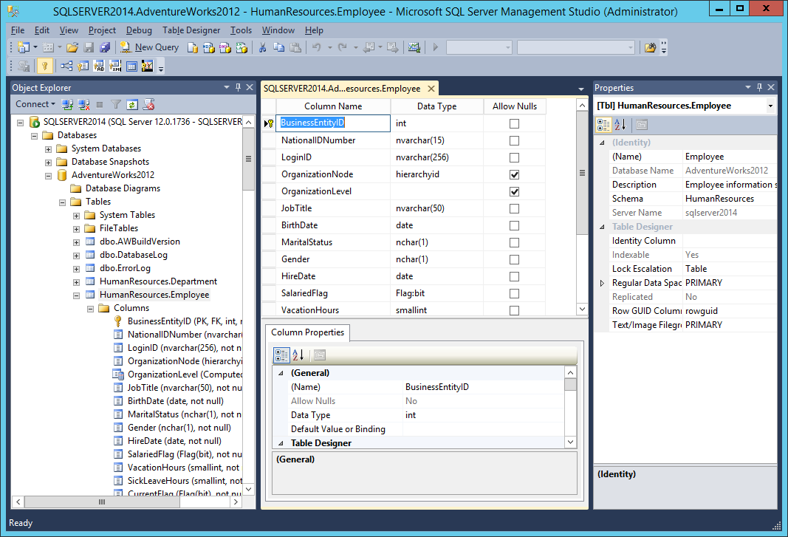

Applications of SQL
-
As mentioned before, SQL is one of the most widely used query language
over the databases. I'm going to list few of them here:
-
Allows users to access data in the relational database management
systems.
-
Allows users to describe the data.
-
Allows users to define the data in a database and manipliate that data.
-
Allows to embed within other languages using SQL modlies, libraries &
pre-compilers.
-
Allows users to create and drop databases and tables.
-
Allows users to create view, stored procedure, functions in a database.
-
Allows users to set permissions on tables, procedures and views.
